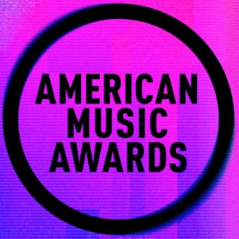

Awards
There are 3 major awards each year. These include: American Music Awards, Grammy Awards, and the Billboard Music Awards.
- The American Music Awards are an anuual music award held each year (usually in the fall).
- It was created in 1973 by Dick Clark.
- Some recent winners include: Taylor Swift, Ed Sheeran, The Weeknd, etc.
- The Grammy Awards are considered the most prestigious worldwide music award.
- The first award was handed out in 1959 (64 years ago).
- Some recent winners include: Harry Styles, Beyoncé, Adele, etc.
- The Billboard Music Awards are an anuual music award given out to artsits. (The same company that ranks music).
- It was created in 1990 and has been giving out awards almost every year.
- Recent winners include: Morgan Wallen, Bailey Zimmerman, Jelly Roll, etc.